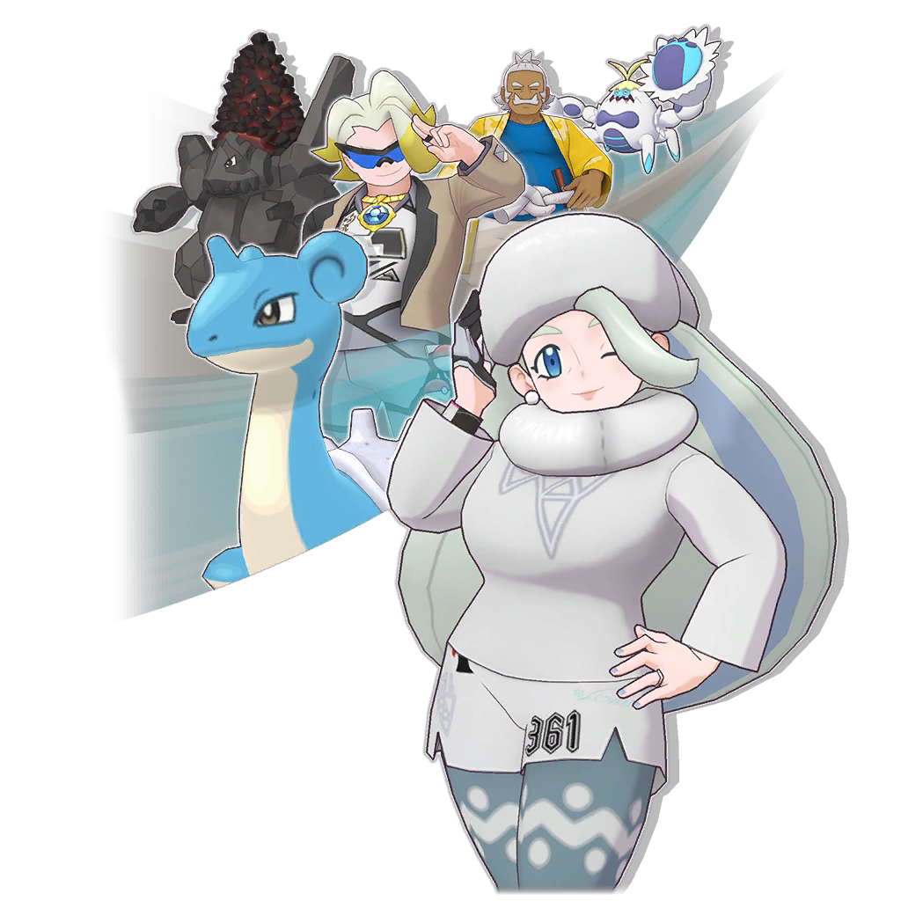

2024/11/29 14:00 - 2025/01/07 14:00
丹帝精選 阿爾套裝盛典
加深牽絆的丹帝！ 以阿爾套裝拍組登場！ 不要忘了確認 付費限定的附好禮拍組搜尋！

2024/11/29 14:00 - 2025/01/07 14:00 附特別贈禮 丹帝精選 阿爾套裝盛典
2024/12/29 14:00 - 2025/01/09 14:00
恭賀新禧 鑽石贈禮！
在指定期間內登入遊戲 把握機會獲得鑽石！
可獲得最多６００００個鑽石！ 活動詳情請到通知確認吧！

2024/12/31 23:00 - 2025/02/10 14:00 劇情活動 惡食的目標 在夜晚的海岸邊 像是在盤算詭計的阪木…… 邪惡組織的據點在一夜之間消失了！？ 阻止獲得新力量的阪木吧！
2024/12/31 23:00 - 2025/02/10 14:00
美極套裝阪木 大師盛典
身穿美極套裝的阪木！ 以大師拍組登場！ 不要忘了確認 付費限定的附好禮拍組搜尋！

2024/12/31 23:00 - 2025/02/10 14:00 附特別贈禮 美極套裝阪木 大師盛典
2024/12/31 23:00 - 2025/01/19 14:00 新年限定 特別超值鑽石！
2024/12/31 23:00 - 2025/02/10 14:00 高難度對戰活動 挑戰閃耀 銀色光芒的靈魂！
2025/01/01 14:00 - 3000/01/01 08:00 傷害挑戰 交換處更新！ 傷害挑戰交換處 品項更新！ 與交換處新追加的 赫普＆啪嚓海膽成為夥伴吧！
2025/01/01 14:00 - 2025/01/09 14:00
恭賀新禧 鑽石贈禮！
在指定期間內登入遊戲 把握機會獲得鑽石！
可獲得最多６００００個鑽石！ 活動詳情請到通知確認吧！
2025/01/01 14:00 - 2025/01/23 14:00 新年券交換處 新年券交換處 登場！ 透過登入獎勵收集新年券 來交換喜歡的道具吧！
2025/01/01 14:00 - 3000/01/01 08:00 訓練家沙龍更新 可以邀請 水蓮了！ 與水蓮＆滴蛛霸成為夥伴 並邀請他們來沙龍吧！
2025/01/01 14:00 - 2025/02/01 14:00
每日搜尋

2025/01/01 14:00 - 2025/05/01 14:00 每日次數限定 明輝精選 繽紛拍組搜尋 明輝登場！ 展開大地領域 並用同步招式來猛攻吧！
2025/01/01 14:00 - 2025/02/01 14:00 vol.29 每月群星盛典
2025/01/01 14:00 - 2025/01/12 14:00 新年賀禮登入獎勵
2025/01/01 14:00 - 2025/01/16 14:00 歡慶新年登入獎勵
2025/01/02 14:00 - 2025/01/20 14:00 連續１５次＋自選★５ 群星盛典 自選盛典限定拍組 來成為夥伴！ 可從３對拍組中自選的拍組搜尋開跑！ 趕快確認登場的拍組吧！
2025/01/02 14:00 - 2025/01/20 14:00 連續１５次＋自選★５ 群星盛典Ａ
2025/01/02 14:00 - 2025/01/20 14:00 連續１５次＋自選★５ 群星盛典Ｂ
2025/01/02 14:00 - 2025/01/20 14:00 連續１５次＋自選★５ 群星盛典Ｃ
2025/01/03 14:00 - 2025/01/21 14:00
相片邊框＆背景 獲得任務
獲得特別的相片邊框 和相片背景吧！
使用獲得的邊框和背景 製作喜歡的相片吧！

2025/01/03 14:00 - 2025/01/21 14:00
劇情活動 交朋友對決！？
即將進行寶可夢對戰的 奇巴納和波琵
波琵所提議的下一場比賽 是結交「好朋友」對決！？

2025/01/03 14:00 - 2025/01/21 14:00 追加期間限定的 探索區域和目的地！ 追加期間限定的 探索區域和目的地！ 盡情享受這段期間僅有的 特別探索與交流吧！
2025/01/03 14:00 - 2025/01/28 14:00 奇巴納季節限定 必得拍組搜尋
2025/01/03 14:00 - 2025/01/21 14:00 奇巴納季節限定 步步升拍組搜尋
2025/01/03 14:00 - 2025/01/21 14:00
奇巴納精選 季節限定拍組搜尋
盛裝打扮的奇巴納 在季節限定拍組搜尋登場！ 不要忘了確認 步步升拍組搜尋的禮物！

2025/01/03 14:00 - 2025/01/28 14:00 奇巴納季節限定 出現機率提升拍組搜尋
2025/01/04 14:00 - 2025/01/07 14:00
丹帝精選 阿爾套裝盛典
阿爾套裝盛典 即將結束！
別錯過能與強大拍組 成為夥伴的大好機會！

2025/01/05 14:00 - 2025/01/28 14:00 波琵季節限定 必得拍組搜尋
2025/01/05 14:00 - 2025/01/21 14:00 波琵季節限定 步步升拍組搜尋
2025/01/05 14:00 - 2025/01/21 14:00
波琵精選 季節限定拍組搜尋
盛裝打扮的波琵 在季節限定拍組搜尋登場！ 不要忘了確認 步步升拍組搜尋的禮物！

2025/01/05 14:00 - 2025/01/28 14:00 波琵季節限定 出現機率提升拍組搜尋
2025/01/06 14:00 - 2025/02/03 14:00 ＶＳ 關都
2025/01/07 14:00 - 2025/01/25 14:00 劇情活動 高升蒼穹的新年新希望 米可利等人正在準備 用來點綴新年新希望的煙火！ 遊玩活動劇情 與華蓮（長袖和服少女）成為夥伴吧！
2025/01/07 14:00 - 2025/01/25 14:00
季節限定 步步升拍組搜尋

2025/01/07 14:00 - 2025/01/25 14:00 大型精選 季節限定拍組搜尋 盛裝打扮的拍組 再次登場！ 步步升拍組搜尋 也同時開跑！
2025/01/07 14:00 - 2025/02/01 14:00 季節限定 出現機率提升拍組搜尋
2025/01/09 14:00 - 2025/01/27 14:00 特別對戰活動 挑戰火箭隊！ 特別對戰活動 挑戰火箭隊！ 挑戰每天追加的對戰 獲得火箭隊幹部和阪木的稱號吧
2025/01/09 14:00 - 2025/02/03 14:00
火箭隊必得★５ 票券專用拍組搜尋

2025/01/09 14:00 - 2025/01/27 14:00
火箭隊精選 步步升拍組搜尋

2025/01/09 14:00 - 2025/01/27 14:00 火箭隊精選 繁星拍組搜尋 火箭隊齊聚一堂！ 與阪木和幹部們 成為夥伴的大好機會！ 千萬不要錯過了！
2025/01/10 14:00 - 2025/01/19 14:00 得分戰活動 冰屬性與 岩石屬性的霸者 得分戰活動 開跑！ 編制冰屬性和岩石屬性的拍組 挑戰５對拍組吧！
2025/01/10 14:00 - 2025/01/24 14:00 屬性限定 自選★５拍組搜尋 
2025/01/10 14:00 - 2025/01/19 14:00 屬性限定 三對拍組精選 群星盛典 與冰屬性和岩石屬性的 拍組成為夥伴吧 ３對強大的盛典限定 拍組也再次登場！
2025/01/12 14:00 - 2025/01/24 14:00 毒屬性＆岩石屬性 蛋活動 這顆蛋會孵出 哪一隻寶可夢呢？ 在活動中收集蛋 與孵化出的寶可夢組成拍組吧！
2025/01/13 14:00 - 3000/01/01 08:00 究極高難度對戰 熱血超寒氣的晝珠 追加新的 究極高難度對戰！ 火力全開的晝珠登場！ 做好萬全準備來挑戰對戰吧！
2025/01/15 14:00 - 2025/02/15 14:00
恭賀新禧 鑽石贈禮！
恭賀新禧鑽石贈禮 抽獎結果現正公開中！
馬上來查看禮物箱！ 詳情請到通知確認吧！
2025/01/15 14:00 - 2025/02/02 14:00 創辦學院篇 爆裂藝術與忍之服飾 來到帕希歐的 秋明與梅洛可 兩人將一起幫忙 設計學院的制服！
2025/01/15 14:00 - 2025/02/02 14:00 梅洛可精選 群星盛典 梅洛可登場！ 用同步招式的魔法火焰 向對手釋出強大的一擊吧！
2025/01/15 14:00 - 2025/02/01 14:00 爆裂藝術與忍之服飾 登入獎勵
2025/01/17 14:00 - 2025/02/02 14:00 秋明精選 群星盛典 秋明登場！ 用同步招式的濁霧 降低所有對手的 毒屬性抵抗來戰鬥吧！
2025/01/21 14:00 - 2025/02/08 14:00 劇情活動 最強歌手爭奪戰！？ 為了決定誰是第一 他們要在演唱會上對決！ 聶梓、霍米加、龍葵 各自組成了滿意的隊伍！
2025/01/21 14:00 - 2025/01/28 14:00 得分戰活動 冰屬性與 岩石屬性的霸者 得分戰活動 排名結果現正公開中！ 結果究竟如何？ 現在就去確認排名吧！
2025/01/21 14:00 - 2025/02/08 14:00 雙對精選 群星盛典 雙對拍組精選群星盛典熱烈開跑！ ２對盛典拍組精選登場！
2025/01/22 14:00 - 2025/02/05 14:00
特別相片任務 來自紫羅蘭的拍攝委託
特別相片任務 來自紫羅蘭的拍攝委託開跑
成功完成紫羅蘭每天委託的 拍攝主題來獲得報酬吧！

2025/01/24 14:00 - 2025/02/02 14:00
傷害排名 激鬥訓練！
傷害排名 激鬥訓練！開跑！
在限制時間內給予極大傷害 來獲得報酬吧！

2025/01/25 14:00 - 2025/01/26 14:00
每月舉辦：特別活動 群星盛典日樂無比
今天是群星盛典日！ 特別活動現正舉辦中！
群星盛典日僅限１次！ 開心拍組搜尋也別錯過！

2025/01/25 14:00 - 2025/02/25 14:00
N精選 大師盛典
打扮華麗的N 再次登場！ 拍檔石盤追加新格子！

2025/01/25 14:00 - 2025/02/25 14:00 附特別贈禮 N精選 大師盛典
2025/01/25 14:00 - 2025/01/26 14:00 群星盛典日僅限１次！ 必得★５拍組搜尋
2025/01/25 14:00 - 2025/01/26 14:00
群星盛典日僅限１次！ 開心拍組搜尋

2025/01/25 14:00 - 2025/01/26 14:00 群星盛典日限定 超值鑽石！
2025/01/25 14:00 - 2025/01/26 14:00 今天是群星盛典日！ 贈送閃閃發亮的禮物
2025/01/26 14:00 - 2025/02/13 14:00 單隊模式活動 鬥志昂揚者們的挑戰！ 鬥志昂揚的 訓練家大集合！ 晝珠的行為舉止 讓也慈感到不對勁，於是她……
2025/02/04 14:00 - 2025/02/11 14:00
傷害排名 激鬥訓練！
傷害排名 結果現正公開中！
結果究竟如何？ 現在就去確認排名吧！
2025/02/07 14:00 - 2025/02/10 14:00 大師盛典 即將結束！ 大師盛典 即將結束！ 別錯過能與強大拍組 成為夥伴的大好機會！